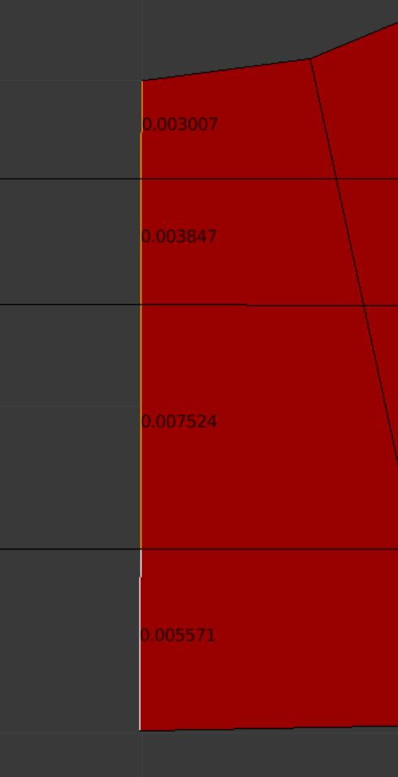
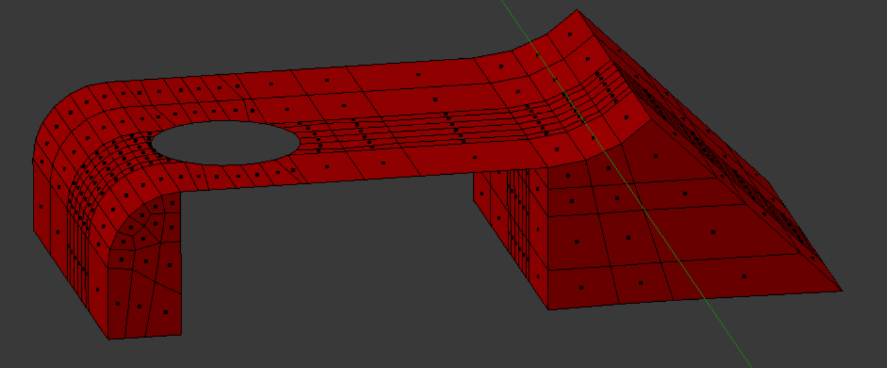
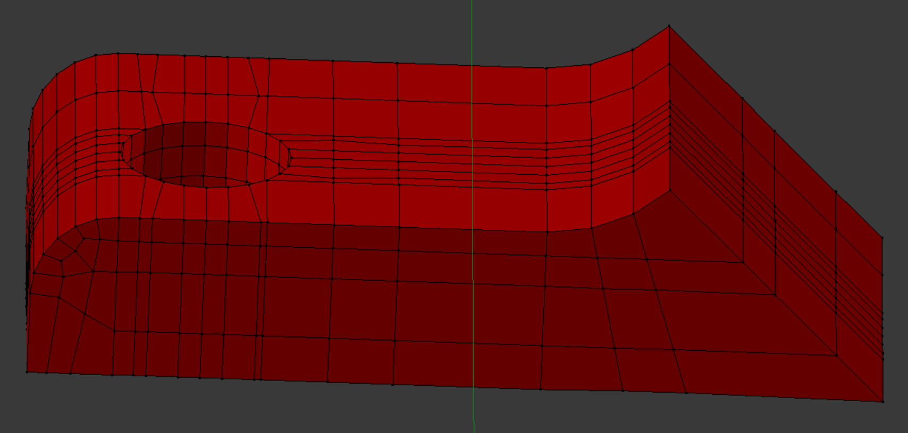
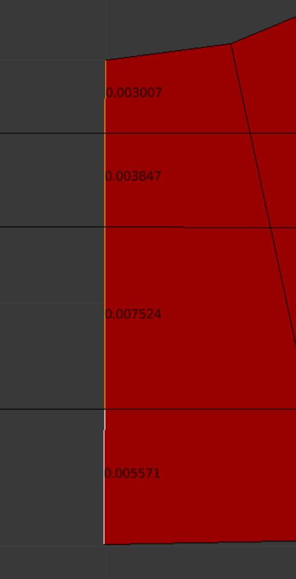
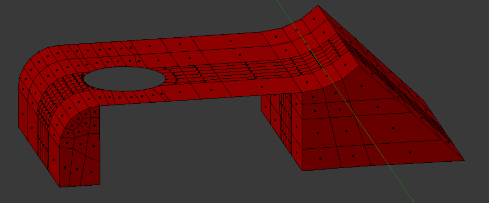
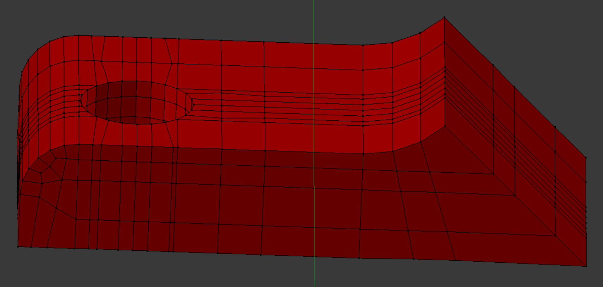
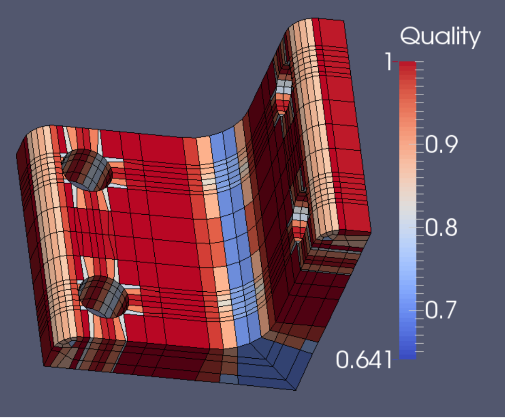
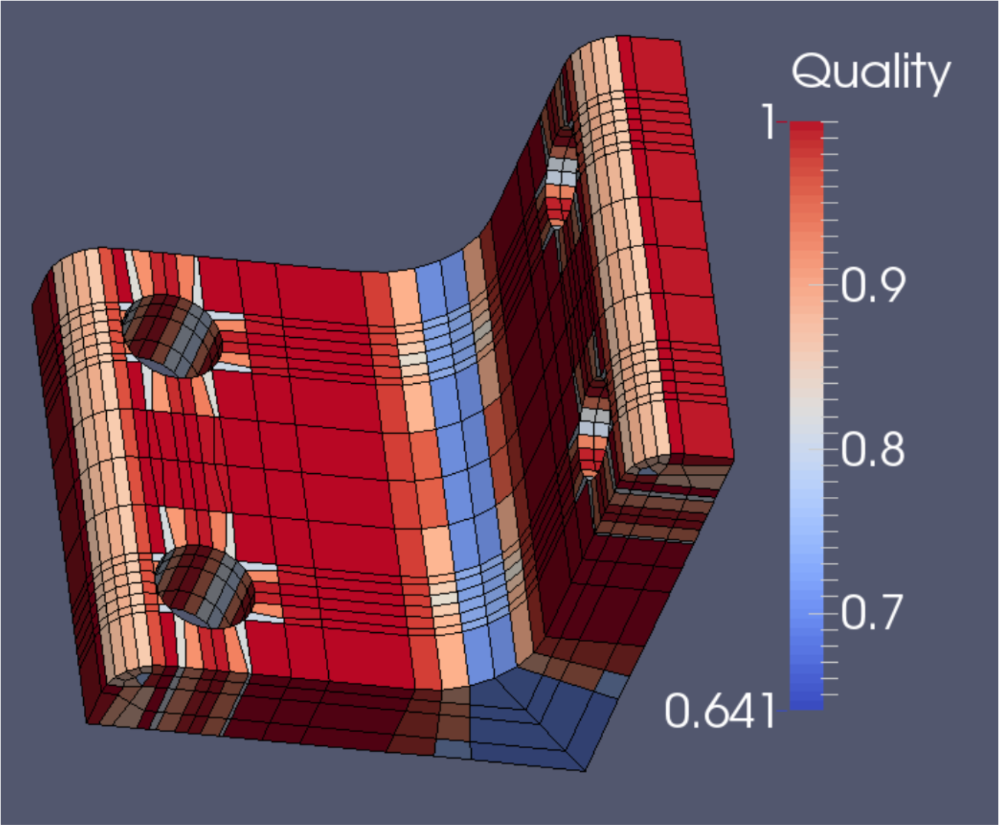

Demo 17
This object is a filleted bracket; the model can be found in the INRIA model repository as a .3DS file, and is imported into Blender with Blender ’ s .3DS import script. Its title is “bracket,” and it is in the Drexel section of the repository (See References). The usual Tris-to-Quads and Partial Dissolve commands are given. The object has a deceptively simple appearance, and some caution is warranted in building its mesh. The hole-fillet tangency issue is shown arrowed.
This object is a filleted bracket; the model can be found in the INRIA model repository as a .3DS file, and is imported into Blender with Blender ’ s .3DS import script. Its title is “bracket,” and it is in the Drexel section of the repository (See References). The usual Tris-to-Quads and Partial Dissolve commands are given. The object has a deceptively simple appearance, and some caution is warranted in building its mesh. The hole-fillet tangency issue is shown arrowed.
The hole-fillet tangency results in angles of only 7.5 degrees. In order to recognize real world constraints, the hole must be moved or the fillet boundary altered. We elect to alter the fillet boundary, moving the single point of tangency slightly as depicted in the zoomed inset. The length of the resulting new edge amounts to a 0.0001 part of the bracket leg length. (The new edge in the main pic has already been created.)
We quarter the object to save time, then decorate the top surface and two front surfaces with faces. There will be two extrusion directions: back, and down.
We have checked the face angles of the newly created faces and found them satisfactory. It only remains to do the extrusions.
 





The view after the horizontal extrusions are finished.
The view after the vertical extrusions are finished.
The view after the vertical extrusions are finished.
After mirroring and reassembly, the Scaled Jacobian quality (left) as well as the Diagonal quality (right) are found to be good. The mesh contains 1800 elements and 2711 nodes.
The heights of the vertically oriented edges dictate the extrusion lengths in the vertical direction, and the widths of the horizontally oriented edges dictate the extrusion lengths in the horizontal direction.
 
